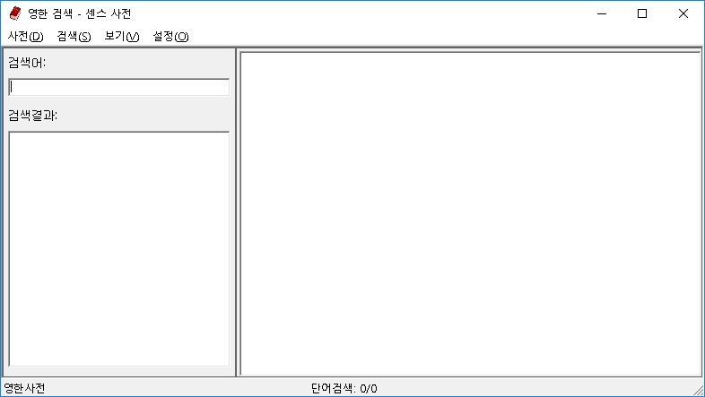

센스 사전은 시각장애인의 학습활동과 정보 습득을 위해 만들어진 편리하고 신뢰성이 높은 사전 프로그램입니다.
센스 사전은 두산동아의 영한/ 한영/ 국어사전 데이터를 사용하여 제작되었기 때문에 자료의 정확성과 신뢰성이 우수하며, 단어, 숙어, 예문 단위의 다양한 검색 방법을 제공합니다.
특히, 기능키를 한 번 누르는 것으로 편집창이나 인터넷 가상커서에서 캐럿이 위치한 단어의 뜻을 확인할 수 있는 자동 검색 기능을 지원함으로써 프로그램의 사용성을 크게 향상시킨 사전 프로그램입니다.
센스 사전의 활용으로 시각장애인 학생의 학력 증진과 일반인 및 직장인의 정보 습득에 많은 도움이 되시기를 바랍니다.
센스 사전을 시작하기 위해서는 아래의 세가지 방법을 사용할 수 있습니다.
센스 사전에 대한 자세한 내용은 센스 사전 시작 문서를 참고해 주세요.
센스 사전의 메뉴에는 크게 [사전], [검색], [보기], [설정] 항목으로 구성되어 있습니다.
센스 사전 메뉴에 대한 자세한 내용은 센스 사전 메뉴 문서를 참고해 주세요.
다음은 센스 사전에서 사용되는 기능키 목록입니다.
| 이름 | 기능키 |
|---|---|
| 검색창으로 이동 | Ctrl-S |
| 검색 목록으로 이동 | Ctrl-R |
| 검색창과 내용표시창 전환 | Ctrl-Tab, F6 |
| 영한사전으로 검색 | Alt-1 |
| 한영사전으로 검색 | Alt-2 |
| 국어사전으로 검색 | Alt-3 |
| 노래방 검색 | Alt-4 |
| 온라인 영영사전 검색 | Alt-5 |
| 위키백과 검색 | Alt-6 |
| 위키백과(영어) 검색 | Alt-7 |
| 미국식 발음 듣기 | F7 |
| 영국식 발음 듣기 | F8 |
| 단어 검색/제목 검색 | Ctrl-1 |
| 숙어 검색/가수 검색 | Ctrl-2 |
| 예문 검색/가사 검색 | Ctrl-3 |
| 이전 결과로 이동 | Ctrl-위 화살표 |
| 다음 결과로 이동 | Ctrl-아래 화살표 |
| 이전 출력 내용 | Alt-왼쪽 화살표 |
| 다음 출력 내용 | Alt-오른쪽 화살표 |
| 자동 검색(내용표시창) | Enter |
| 찾기 | Ctrl-F |
| 다시 찾기 | F3 |
| 반대로 찾기 | Shift-F3 |